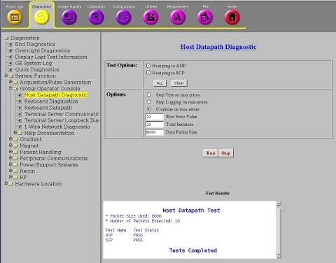
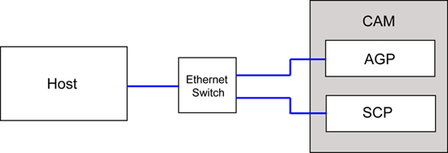

Operating Documentation
Direction 5670006, Rev# 1
Discovery MR750w GEM Service Methods
Module Version 4.0, Version Date 10/12/11
Operating Documentation |
Diagnostics >> System Function >> Global Operator Console >> Host Datapath Diagnostics
Diagnostics >> Hardware Location >> Global Operator Console >> Host Datapath Diagnostics
Illustration 1: Host Datapath Diagnostics

The purpose of this diagnostic is to verify the Ethernet communications links between the host computer and the processor boards within the CAM.
This diagnostic uses the host computer’s ping command, which is an operating system tool used for network testing, measurement and management. From the host computer, the diagnostic conducts a ping command, which elicits a ECHO_RESPONSE from a target processor board. Statistics from the datagram, which includes round trip time, are used to compute the minimum, average and maximum response times.
The diagnostic interface provides default iteration and packet size parameters that were established to minimally “hammer” the Ethernet communications.
Host --cable-- Ethernet Switch --cable-- AGP board
Host --cable-- Ethernet Switch --cable-- SCP board
Illustration 2: Block Diagram

Select the board you want to ping.
Modify other test parameters as necessary.
Press the [Run] button.
Review the error log and corresponding extended error messages for subsequent actions. Additional responses to the diagnostic’s results are as follows:
| Results | Description | GE Field Action |
| Failed | Tests to each of the processor boards fail. |
|
| Failed | Individual processor board failures. |
|